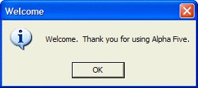
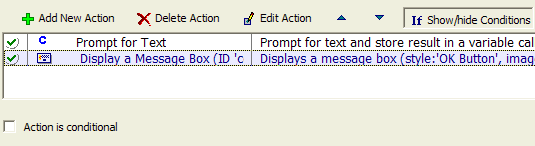
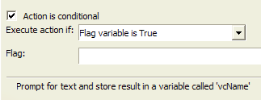
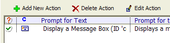
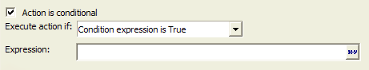
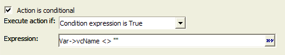

Making an Action Conditional
In our Action Script, the second Action which displays the message box executes even if the user clicks the cancel button when prompted for his or her name. Try this:
Select the "Lesson1" script in the Control Panel, and click the Run button. Alpha Five displays the prompt for the user name.
Click the Cancel button. Alpha Five displays the message box:

This, of course, is not what you want. You want to suppress this message box from appearing if the user clicks the Cancel button (or you might want to display an entirely different message box).
Alpha Five lets you specify conditions for each Action in an Action Script. For each action in the script, Alpha Five evaluates the condition at run-time and decides whether or not to execute that condition.
If the user clicks the Cancel button in the Prompt for Text Action, the variable set by this action will be blank (i.e has a NULL value). Therefore, we want to display the message box only if the variable is not NULL.
Here is how to accomplish this:
Dismiss the Welcome dialog box.
Click the "Lesson1" script in the Control Panel and then click the Design button.
Click the If Show/hide Conditions button. This is a toggle button, so now it appears pressed. Once the Show/hide Conditions button is pressed, the Action Script Editor shows a new column for each action.

The green check mark next to each action indicates that the action is not conditional. In other words, the action will always be executed. To make the Display a Message Box Action conditional.
Select the "Display a Message Box" Action.
Check the Action is conditional box to make the "Display a Message Box Action" conditional. When you do this, additional prompts on the Code Editor become visible.

In addition, the icon to the left of the Action changes to an orange ? mark, indicating that the Action is conditional.

Alpha Five offers two kinds of conditional tests. It will execute the current action if either:
a flag variable is True
a condition expression is True
In this case you want the "Condition Expression is True" option. (The "Flag variable is True" option will be described later).
Select "Condition Expression is True".
Click the Expression Builder button at the Expression prompt.

Enter the expression: Var->vcName <> "".
Click OK to close the Expression Builder. Your screen should now look like this:

Click the Save Script button to save the script (but do not close the Code Editor ).
Test the script by clicking the Run Script button. Click the Cancel button when prompted for a name.
Now the previous message box no longer appears.